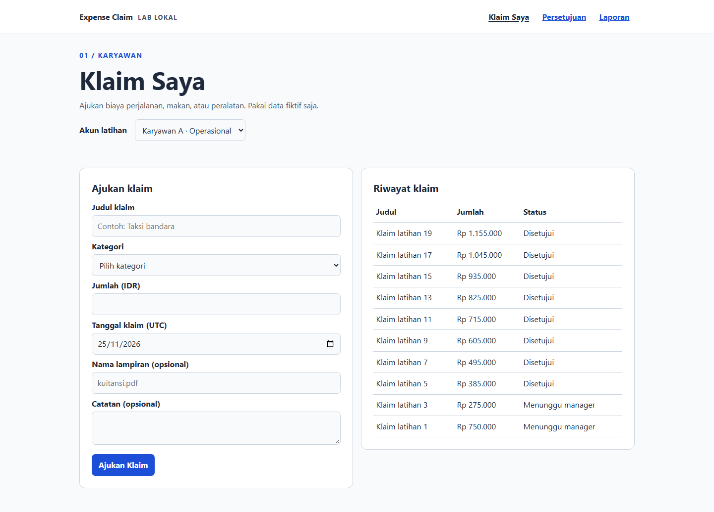

S02 / SKENARIO
Agent Mode lintas file
Bandingkan dropdown pada form dan uji nilai yang tidak tersedia.
Level 1Bima
Durasi 8 menit · estimasi latihan
Cerita tim
Diminta tambah field "kategori klaim". Terdengar kecil, tapi menyentuh DB migration, model, validasi API, form UI, dan test. Setengah hari habis untuk pekerjaan mekanis.
Yang disiapkan di repo
P2 — field category belum ada.
Pilihan solusi
Agent Mode di VS Code: satu prompt → agent rencanakan, edit 6 file, jalankan npm test, perbaiki sendiri.
- Bima menyiapkan konteks.
- Agent mengerjakan latihan S02.
- Manusia memeriksa: Bandingkan dropdown pada form dan uji nilai yang tidak tersedia.
Langkah demo
- Baca issue latihan dan kriteria selesai.
- Gunakan prompt atau perintah berikut. Prompt atau perintah
Tambah pilihan kategori Travel, Meals, Equipment, Other dari form sampai API dan test. - Periksa hasil: Bandingkan dropdown pada form dan uji nilai yang tidak tersedia.
Before / After



- Baseline
- Kategori selalu Other
- Target setelah latihan
- Pengaju memilih kategori
- Verifikasi
- Bandingkan dropdown pada form dan uji nilai yang tidak tersedia.
Manfaat untuk tim
- Developer fokus review & keputusan desain; tidak ada file terlewat.
Bukti yang bisa diperiksa
- Issue GitHub · S02
S02-01-agent-plan.png· belum di-captureS02-02-files-changed.png· belum di-captureS02-03-tests-green.png· belum di-capture
Screenshot aplikasi adalah perbandingan dua branch lokal, bukan bukti output dari Copilot cloud.
Ulangi latihan
Jalankan dari root repo latihan. Reset hanya menyentuh worktree lokal yang bersih.
npm run reset